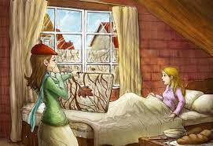

<!-- HTML --><title>Story Wisdom</title>
<style type="text/css">
/* CSS */
.container {
  max-width: 1200px;
  margin: 0 auto;
  padding: 0 20px;
}
header {
  display: flex;
  align-items: center;
  font-family: "Meta", sans-serif;
  justify-content: space-between;
  background: #6052DD;
  color: #fff;
  padding: 20px;
}
  body.dark-mode {
    background-color: #111;
    color: #fff;
  }
  img {
  width: 100%;
  height: 200px;
  object-fit: contain;
}
header img {
  height: 50px;
}
nav {
  display: flex;
  text-align: center;
}
nav a {
  color: #fff;
  text-decoration: none;
  padding: 0 20px;
}
nav a:hover {
  color: #eee;
}
main {
  padding: 20px;
}
.story-grid {
  display: flex;
  flex-wrap: wrap;
  gap: 20px;
}
.story-card {
  width: 300px;
  box-shadow: 0 0 10px rgba(0,0,0,0.5);
}
.story-card img {
  width: 100%;
  height: 200px;
  object-fit: cover;
}
.story-card h3 {
  margin: 10px 0;
}
.story-card p {
  margin: 0;
  font-size: 0.8em;
}
footer {
  background: #6052DD;
  color: #fff;
  text-align: center;
  padding: 20px;
}
.ul {
  display: flex;
  list-style: none;
  margin: 0;
  padding: 0;
}
.ul li {
  position: relative;
}
.dropdown {
  position: relative;
}

.dropdown-content {
  display: none;
  position: absolute;
  top: 100%;
  left: 0;
  background-color: #f9f9f9;
  box-shadow: 0px 8px 16px 0px rgba(0,0,0,0.2);
}

.dropdown:hover .dropdown-content {
  display: block;
}

.dropdown-content a {
  display: flex;
  width: 200px;
  padding: 12px 16px;
  color: #333;
  text-decoration: none;
}

.dropdown-content a:hover {
  background-color: rgb(87, 156, 247);
}
ul li a:hover {
  background-color: #444;
}

</style>
<div class="container">
    <header>
        
        <nav>
          <ul>
            <li><a href="index.html">Home</a></li>
            <li><a href="privacy.html">Privacy policy</a></li>
            <li class="dropdown"><a href="#">Authors
              <ul class="dropdown-content">
                <li><a href="story 1.html">Shirley Jackson</a></li>
                <li><a href="story2.html">Thom Brodkin</a></li>
                <li><a href="story3.html">O. Henery</a></li>
              </ul>
            </a></li>
            <li class="dropdown">
              <a href="#">Stories</a>
              <ul class="dropdown-content">
                <li><a href="story 1.html">The Lottery Ticket</a></li>
                <li><a href="story2.html">Silence</a></li>
                <li><a href="story3.html">The Last Leaf</a></li>
              </ul>
            </li>
          </ul>
        </nav>
        
  </header><center>
  
    
    <h3>The Last Leaf</h3>
    <p>by <a href="#">O. Henery.</a></p>
    <p>Genre: <a href="#">Romance</a></p>
    <input type="range" min="10" max="60" value="20" class="slider" id="size-slider">

<button id="dark-mode-toggle">Reading Mode</button>
<script>
  const toggleDarkMode = () => {
    document.body.classList.toggle('dark-mode');
  };

  const button = document.getElementById('dark-mode-toggle');
  button.addEventListener('click', toggleDarkMode);
</script>

<p class="text" id="size-text">

    IN A SMALL PART OF THE CITY WEST OF
    Washington Square, the streets have gone wild. They turn in different 
    directions. They are broken into small pieces called “places.” One 
    street goes across itself one or two times. A painter once discovered 
    something possible and valuable about this street. Suppose a painter 
    had some painting materials for which he had not paid. Suppose he 
    had no money. Suppose a man came to get the money. The man might 
    walk down that street and suddenly meet himself coming back, without having received a cent!
    This part of the city is called Greenwich Village. And to old 
    Greenwich Village the painters soon came. Here they found rooms 
    they like, with good light and at a low cost.
<br>
    Sue and Johnsy lived at the top of a building with three floors. One 
    of these young women came from Maine, the other from California. 
    They had met at a restaurant on Eighth Street. There they discovered 
    that they liked the same kind of art, the same kind of food, and the same 
    kind of clothes. So they decided to live and work together.
    That was in the spring.
    Toward winter a cold stranger entered Greenwich Village. No one 
    could see him. He walked around touching one person here and another 
    there with his icy fingers. He was a bad sickness. Doctors called him 
    Pneumonia. On the east side of the city he hurried, touching many people; but in the narrow streets of Greenwich Village he did not move so 
    quickly.
    Mr. Pneumonia was not a nice old gentleman. A nice old gentleman would not hurt a weak little woman from California. But Mr. 
    Pneumonia touched Johnsy with his cold fingers. She lay on her bed 
    almost without moving, and she looked through the window at the 
    wall of the house next to hers.<br>
    One morning the busy doctor spoke to Sue alone in the hall, 
    where Johnsy could not hear.
    “She has a very small chance,” he said. “She has a chance, if she 
    wants to live. If people don’t want to live, I can’t do much for them. 
    Your little lady has decided that she is not going to get well. Is there 
    something that is troubling her?”
    “She always wanted to go to Italy and paint a picture of the Bay 
    of Naples,” said Sue.
    “Paint! Not paint. Is there anything worth being troubled about? 
    A man?”
    “A man?” said Sue. “Is a man worth—No, doctor. There is not a 
    man.”
    “It is weakness,” said the doctor. “I will do all I know how to do. 
    But when a sick person begins to feel that he’s going to die, half my work 
    is useless. Talk to her about new winter clothes. If she were interested in 
    the future, her chances would be better.”
    After the doctor had gone, Sue went into the workroom to cry. 
<br>
    Then she walked into Johnsy’s room. She carried some of her painting 
    materials, and she was singing.
    Johnsy lay there, very thin and very quiet. Her face was turned 
    toward the window. Sue stopped singing, thinking that Johnsy was 
    asleep.
    Sue began to work. As she worked she heard a low sound, again 
    and again. She went quickly to the bedside.
    Johnsy’s eyes were open wide. She was looking out the window 
    and counting—counting back.<br>
    “Twelve,” she said; and a little later, “Eleven”; and then, “Ten,” 
    and, “Nine”; and then, “Eight,” and, “Seven,” almost together.
    Sue looked out the window. What was there to count? There was 
    only the side wall of the next house, a short distance away. The wall 
    had no window. An old, old tree grew against the wall. The cold breath 
    of winter had already touched it. Almost all its leaves had fallen from 
    its dark branches.
    “What is it, dear?” asked Sue.
    “Six,” said Johnsy, in a voice still lower. “They’re falling faster now. 
    Three days ago there were almost a hundred. It hurt my head to count 
    them. But now it’s easy. There goes another one. There are only five 
    now.”
    “Five what, dear? Tell your Sue.”
    “Leaves. On the tree. When the last one falls, I must go, too. I’ve 
    known that for three days. Didn’t the doctor tell you?”<br>
    “Oh, I never heard of such a thing,” said Sue. “It doesn’t have any 
    sense in it. What does an old tree have to do with you? Or with your 
    getting well? And you used to love that tree so much. Don’t be a little 
    fool. The doctor told me your chances for getting well. He told me this 
    morning. He said you had very good chances! Try to eat a little now. 
    And then I’ll go back to work. And then I can sell my picture, and 
    then I can buy something more for you to eat to make you strong.”
    “You don’t have to buy anything for me,” said Johnsy. She still 
    looked out the window. “There goes another. No, I don’t want anything to eat. Now there are four. I want to see the last one fall before 
    night. Then I’ll go, too.”
    “Johnsy, dear,” said Sue, “will you promise me to close your eyes 
    and keep them closed? Will you promise not to look out the window 
    until I finish working? I must have this picture ready tomorrow. I need 
    the light; I can’t cover the window.”<br>
    “Couldn’t you work in the other room?” asked Johnsy coldly.
    “I’d rather be here by you,” said Sue. “And I don’t want you to 
    look at those leaves.”
    “Tell me as soon as you have finished,” said Johnsy. She closed 
    her eyes and lay white and still. “Because I want to see the last leaf fall. 
    I have done enough waiting. I have done enough thinking. I want to go 
    sailing down, down, like one of those leaves.”<br>
    “Try to sleep,” said Sue. “I must call Behrman to come up here. I 
    want to paint a man in this picture, and I’ll make him look like Behrman. 
    I won’t be gone a minute. Don’t try to move till I come back.”
    Old Behrman was a painter who lived on the first floor of their 
    house. He was past sixty. He had had no success as a painter. For forty 
    years he had painted, without ever painting a good picture. He had 
    always talked of painting a great picture, a masterpiece, but he had 
    never yet started it.
    He got a little money by letting others paint pictures of him. He 
    drank too much. He still talked of his great masterpiece. And he 
    believed that it was his special duty to do everything possible to help Sue 
    and Johnsy.<br>
    Sue found him in his dark room, and she knew that he had been 
    drinking. She could smell it. She told him about Johnsy and the leaves 
    on the vine. She said that she was afraid that Johnsy would indeed sail 
    down, down like the leaf. Her hold on the world was growing weaker.
    Old Behrman shouted his anger over such an idea.
    “What!” he cried. “Are there such fools? Do people die because 
    leaves drop off a tree? I have not heard of such a thing. No, I will not 
    come up and sit while you make a picture of me. Why do you allow 
    her to think such a thing? That poor little Johnsy!”
    “She is very sick and weak,” said Sue. “The sickness has put these 
<br>
    strange ideas into her mind. Mr. Behrman, if you won’t come, you 
    won’t. But I don’t think you’re very nice.”
    “This is like a woman!” shouted Behrman. “Who said I will not 
    come? Go. I come with you. For half an hour I have been trying to say 
    that I will come. God! This is not any place for someone so good as 
    Johnsy to lie sick. Some day I shall paint my masterpiece, and we shall 
    all go away from here. God! Yes.”
    Johnsy was sleeping when they went up. Sue covered the window, 
    and took Behrman into the other room. There they looked out the window fearfully at the tree. Then they looked at each other for a moment 
    without speaking. A cold rain was falling, with a little snow in it too.
    Behrman sat down, and Sue began to paint.
    She worked through most of the night.<br>
    In the morning, after an hour’s sleep, she went to Johnsy’s bedside. Johnsy with wide-open eyes was looking toward the window. “I 
    want to see,” she told Sue.
    Sue took the cover from the window.
    But after the beating rain and the wild wind that had not stopped 
    through the whole night, there still was one leaf to be seen against the 
    wall. It was the last on the tree. It was still dark green near the branch. 
    But at the edges it was turning yellow with age. There it was hanging 
    from a branch nearly twenty feet above the ground.
    “It is the last one,” said Johnsy. “I thought it would surely fall during the night. I heard the wind. It will fall today, and I shall die at the 
    same time.”<br>
    “Dear, dear Johnsy!” said Sue. “Think of me, if you won’t think 
    of yourself. What would I do?”
    But Johnsy did not answer. The most lonely thing in the world is 
    a soul when it is preparing to go on its far journey. The ties that held 
    her to friendship and to earth were breaking, one by one.
    The day slowly passed. As it grew dark, they could still see the 
    leaf hanging from its branch against the wall. And then, as the night 
    came, the north wind began again to blow. The rain still beat against 
    the windows.<br>
    When it was light enough the next morning, Johnsy again commanded that she be allowed to see.
    The leaf was still there.
    Johnsy lay for a long time looking at it. And then she called to 
    Sue, who was cooking something for her to eat.
    “I’ve been a bad girl, Sue,” said Johnsy. “Something has made that 
    last leaf stay there to show me how bad I was. It is wrong to want to die. 
    I’ll try to eat now. But first bring me a looking-glass, so that I can see 
    myself. And then I’ll sit up and watch you cook.”
    An hour later she said, “Sue, some day I hope to paint the Bay of 
    Naples.”<br>
    The doctor came in the afternoon. Sue followed him into the 
    hall outside Johnsy’s room to talk to him.
    “The chances are good,” said the doctor. He took Sue’s thin, shaking hand in his. “Give her good care, and she’ll get well. And now I must 
    see another sick person in this house. His name is Behrman. A painter, 
    I believe. Pneumonia, too. Mike is an old, weak man, and he is very ill. 
    There is no hope for him. But we take him to the hospital today. We’ll 
    make it as easy for him as we can.”
    The next day the doctor said to Sue: “She’s safe. You have done 
    it. Food and care now—that’s all.”
    And that afternoon Sue came to the bed where Johnsy lay. She 
    put one arm around her.<br>
    “I have something to tell you,” she said. “Mr. Behrman died of 
    pneumonia today in the hospital. He was ill only two days. Someone 
    found him on the morning of the first day, in his room. He was helpless with pain.”
    “His shoes and his clothes were wet and as cold as ice. Everyone 
    wondered where he had been. The night had been so cold and wild.
    “And then they found some things. There was a light that he had 
    taken outside. And there were his materials for painting. There was 
    paint, green paint and yellow paint. And—
    “Look out the window, dear, at the last leaf on the wall. Didn’t 
    you wonder why it never moved when the wind was blowing? Oh, my 
    dear, it is Behrman’s great masterpiece—he painted it there the night 
    that the last leaf fell.”

    </p></center>
    
  


  <script type="text/javascript">
    // JavaScript
    const slider = document.getElementById('size-slider');
    const text = document.getElementById('size-text');
    
    slider.addEventListener('input', function() {
      text.style.fontSize = this.value + 'px';
    });
    
    </script>

  <footer>
    <p>Copyright ©️ 2023 Story Wisdom</p>
  </footer>
